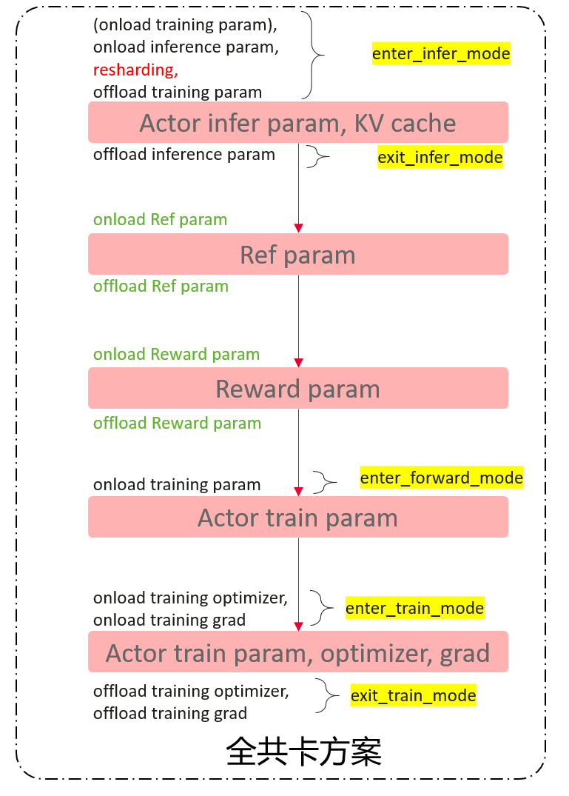
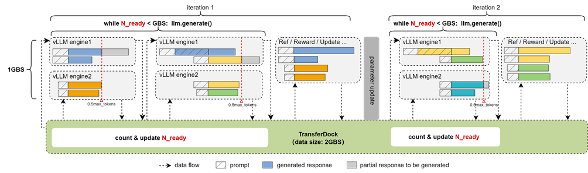
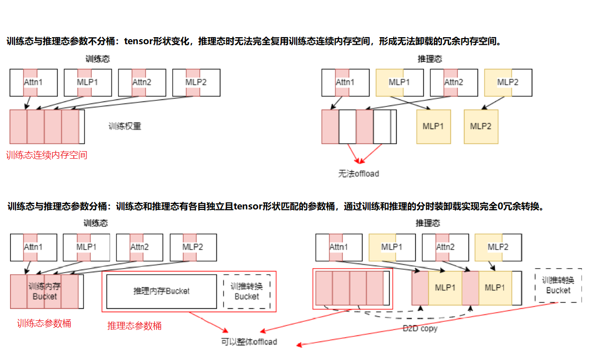

00全景与读法
MindSpeed-RL 提供训推共卡 colocate 与训推异构两种形态，配套权重重切分、Partial Rollout、多模型异步流水调度等特性。论文口径（arXiv 2507.19017）在 Qwen2.5-7B/32B、Qwen3-MoE-30B、DeepSeek-R1-671B 上取得 1.42~3.97× 吞吐提升，并完成 384 NPU 超节点实验——这是昇腾能跑大规模 RL 的最正式官方证据。但项目已谢幕：2026.4 README 声明暂停新增功能，2026-05-20 后零提交，且 README 亲自将用户导流至 verl。本文是其成绩单，也是结算：它做成了什么、留下了什么、看板既有结论需要如何更新。
每一节固定三段：朴素基线（左栏，灰：不看框架文档、按直觉会怎么做）/ 它的做法（右栏，橙：MindSpeed-RL 实际怎么做）/ 差在哪（下方色块：差异、原文是否给了理由、对 RL-on-NPU 的含义）。数字按来源分三类标注：第三方 GitHub 镜像口径核验（2026-08-27）或多方一致；自报 论文口径与仓库 README 口径；推断 本站分析（第 06 节三种解读、第 07 节工程经验流向均为推断）。所有规格标记 provisional，以官方最新文档为准。
一条贯穿全文的线索：框架谢幕不使实验作废，但使选型改变。384 NPU / R1-671B 的验证记录作为可行性锚点继续有效；trainer 选型从官方自研切换到社区框架的昇腾后端。分歧只在这次切换是主动规划还是被动接受，而这个分歧不影响后续选型结论。
01为何此篇欠了很久
MindSpeed-RL 是本看板被引用最多、却始终没有专篇的昇腾 RL 框架。Dispatch 02 引它作为"昇腾在 910B/384-NPU 上跑通 R1-671B"的证据；Dispatch 13 的昇腾 SWE-RL 方案曾选它为 trainer；Dispatch 19 把它列为三线互补表中的"昇腾官方线"；Dispatch 23 讨论昇腾软件栈"根治层缺位"时，它是官方投入的主要反例。四次引用，零次详解——欠账明确。补写的时机有其反讽之处：等到本篇成文，MindSpeed-RL 已经谢幕。2026-08-27 核验，仓库 master 最后提交停在 2026-05-20（文档类改动），6、7、8 月零提交；README 在 2026.4 声明"已完成既定开发目标，将暂停新增功能"，并新增指引将用户导向 verl 的昇腾实践。于是本篇的写法随之改变：不是一份选型评测，而是一份结算。
朴素基线
框架详解篇按选型评测的写法：功能对比、吞吐对比、给出"是否采用"的结论。
它的做法
第三方（2026-08-27 核验）master 末次提交 2026-05-20、6–8 月零提交、README 2026.4 声明暂停并导流 verl。推断 本篇改写为结算：做成了什么、留下了什么、看板结论如何更新；与 D33 成对——官方线的终点恰是社区线的起点。
差在哪写法的改变来自事实的改变：一个已暂停的框架不再是选型对象，而是遗产来源。这决定了本文后半部分（第 05–07 节）的重心在时间线、解读与流向，而非功能对比。对看板的含义：四次引用中 D13 的 trainer 选型与 D19 的三线表需要更新（第 07 节）。
02架构：MindSpeed 训练 + vLLM-Ascend 生成，两种部署形态
MindSpeed-RL 自述为"端到端的 RL 训推解决方案"，结构上是两个引擎的组合（本看板 D02 口径）：训练侧是 MindSpeed——昇腾的 Megatron 系训练引擎；生成侧是 vLLM-Ascend。算法覆盖 GRPO、DAPO、PPO、DPO，按 Released/Preview 分级。部署形态有两种：训推共卡 colocate（训练与生成分时复用同一批 NPU）与训推异构切分（训练与生成各占独立资源、各选并行策略，依赖专门的训推异构切分通信）。

这张图怎么读
看中间的双向箭头：从训练到生成的是"权重重切分：训练并行布局转生成布局"，从生成到训练的是"轨迹数据回流"。这两条箭头就是 RL 单步的全部跨引擎交互，也是所有"Megatron 系训练 + vLLM 系推理"框架的共同结构——差别只在它落在 HCCL 而非 NCCL 上。
再看三个特性的指向：Partial Rollout 与多模型异步流水调度指向生成引擎，去 padding 与 CP 指向训练底座。这说明特性清单不是并列功能点，而是分别针对 rollout 侧（D02 的 70% wall-clock）与训练侧（长 CoT 吞吐）的两组问题。两种形态的虚线走向不同：colocate 挂到训练底座（分时复用同一批 NPU），异构切分挂到生成引擎并标注"依赖训推异构切分通信"——异构形态的额外成本在通信层。

这张图怎么读
这张图是 colocate 形态的时间轴：纵向自上而下是一次迭代内的阶段顺序，每个红色方块是该阶段驻留在 NPU 显存中的对象。要读的是方块之间的文字——每次阶段切换都伴随一对 offload / onload：推理参数卸载后加载 Ref 参数，Ref 卸载后加载 Reward 参数，Reward 卸载后加载训练参数，最后再加载优化器与梯度。这正是 D13 昇腾四问题第一条（vLLM-Ascend 无 sleep-mode、训推共卡时显存争用无法优雅切换）的官方工程答案：用显式的分段装卸代替 sleep-mode。
红字 resharding 出现在最顶端的 enter_infer_mode 之内：训练参数加载后立即重切分为推理布局，再卸载训练参数——权重重切分在 colocate 形态下是显存驻留的一部分，而不是网络传输。底部"Actor train param, optimizer, grad"是显存峰值所在；这解释了为何 colocate 的可行性取决于单卡显存能否在某一时刻同时容纳训练参数、优化器与梯度。图 5（参数分桶）说明了 onload / offload 得以整体进行的前提。
朴素基线
训练与推理各起一套进程占独立的卡；或在同一批卡上依赖推理引擎的 sleep-mode 释放显存后切换到训练；权重同步用全量广播。
它的做法
自报 两种形态并存：colocate 以显式 onload / offload 分段装卸（图 2）在同一批 NPU 上分时复用；训推异构切分让训练与生成各占独立资源、各选并行策略，依赖专门的训推异构切分通信。权重重切分做在 HCCL 语义之上，在两种并行布局间转换。算法 GRPO / DAPO / PPO / DPO 按 Released / Preview 分级。
差在哪差异在于在无 sleep-mode 的约束下，用显式分段装卸实现共卡，而不是等待推理引擎补齐该能力。原文对这一设计给出的理由是 D13 第一条问题的约束；对另外三条问题（logprob 一致性、长 rollout、沙箱成本）的对应分别落在权重重切分的数值一致性、Partial Rollout 与 CP、以及框架边界之外。整体判断：这套特性组合与 slime（D19）、verl 等 NVIDIA 栈框架的设计议程高度同构，差异在于全部落在昇腾原生栈（MindSpeed + vLLM-Ascend + HCCL）上——它证明的不是设计新颖性，而是昇腾栈承载这套设计的完整性。
03特性清单：每一项对应一个具体问题
特性清单不是并列的功能点，每一项对应一个具体问题，且大多能对回本看板既有的两组观察。权重重切分：训练与生成的最优并行布局不同（训练要 TP/PP/EP 组合，生成要低延迟的推理切分），每步权重同步时需在两种布局间转换。这是所有"训练 Megatron 系 + 推理 vLLM 系"框架的共同必修课，MindSpeed-RL 把它做在 HCCL 语义之上。Partial Rollout：直接回应 Dispatch 02 的核心量化——rollout 占 RL 单步 70% 以上 wall-clock，且长尾样本决定整批等待时间。截断长尾、跨步续采，以有限的 off-policy 代价换整批吞吐。多模型异步流水调度：RL 单步涉及 actor、reference、reward 等多个模型的计算，异步流水将其重叠，减少串行空转。训推共卡 colocate：对应 Dispatch 13 昇腾四问题中的第一条——vLLM-Ascend 彼时无 sleep-mode，训推共卡时显存争用无法优雅切换。数据调度与去 padding：变长序列不补齐，长序列走 CP 并行——长 CoT 时代的吞吐基本功。

while N_ready < GBS: llm.generate() 驱动两个 vLLM engine；红色虚线为截断点（图中标 0.5max_tokens），灰色段为待续采的部分响应，底部绿色 TransferDock（data size: 2GBS）负责 count & update N_ready 与数据缓存；中间灰柱为 parameter update。图例：斜纹 prompt、实色 generated response、灰色 partial response to be generated。自报 取自 Ascend/MindSpeed-RL 仓库 docs/zh/figures/partial_rollout/sync.png。这张图怎么读
横轴是时间，两个大括号是两次迭代。要读的是红色虚线右侧的灰色段：在 iteration 1 第一次 generate 中，engine1 与 engine2 各有一条响应在截断点被切断（灰色 = partial response to be generated），而不是等它生成完。被截断的样本进入底部 TransferDock，第二次 generate 时优先取出续采（engine1 上半部分的蓝色 + 黄色拼接段即为续采）。N_ready < GBS 是循环条件：直到有 GBS 个 prompt 完成全部推理才进入 Ref / Reward / Update。
这就是正文"截断长尾、跨步续采"的机制图。off-policy 代价在图中也能看到：iteration 2 中续采的绿色段是用 parameter update 之后的新权重生成的，与同一条轨迹前半段（旧权重生成）拼接——原文所说"以有限的 off-policy 代价换整批吞吐"，代价就在这条拼接的轨迹上。TransferDock 容量 2GBS 是缓存上限。这张图是对 D02"长尾样本决定整批等待时间"最直接的工程回应。

这张图怎么读
上下两半是对照实验的两种内存布局。上半的关键在右侧"推理态"：Attn1 / Attn2 仍指向训练态那块连续内存的部分区域，而 MLP1 / MLP2（黄色）因形状变化被另开空间——于是训练态连续内存中留下了既被部分引用、又无法整体释放的区域，红色箭头标注"无法 offload"。这是为什么权重重切分在 colocate 形态下会产生显存冗余的直观解释。
下半的解法是三个独立桶：训练桶、推理桶、训推转换桶，形状各自与其状态匹配。推理时训练桶可整体 offload（红色箭头"可以整体 offload"），推理桶通过 D2D copy 填充。这正是图 2 中每一段 onload / offload 能够干净切换的前提——没有分桶，图 2 的分段装卸会在每一步累积无法释放的碎片。对照 D13 第二个问题（train-infer logprob 一致性）：分桶解决的是显存效率，转换过程的数值一致性仍需另行验证，原文未给。
朴素基线
rollout 等所有样本生成完再进训练，长尾样本决定整批等待；actor / reference / reward 串行计算；变长序列补齐到最长；训练权重与推理权重共用一块内存，按需 view。
它的做法
自报 Partial Rollout 在截断点切断长尾、经 TransferDock 跨步优先续采（图 3）；多模型异步流水调度重叠 actor / reference / reward 计算；去 padding 与长序列 CP 并行；权重重切分做参数分桶，训练桶与推理桶形状各自匹配、可整体 offload、D2D copy 转换（图 4），落在 HCCL 语义之上。
差在哪每一项差异都能对回看板既有量化：Partial Rollout 对 D02 的"rollout 占 70% 以上 wall-clock、长尾决定整批等待"；colocate 对 D13 第一条；权重重切分对 D13 第二条的显存侧（数值侧未给）；CP 对 D13 第三条（长 rollout）；沙箱成本在框架边界之外。原文对每项特性给出的都是"对应什么问题"而非"改善多少"——单项特性的收益数字原文未给，只有第 04 节的整体吞吐倍数。
04成绩单：昇腾大规模 RL 的最正式官方证据
MindSpeed-RL 的核心价值在其公开验证记录。论文（arXiv 2507.19017）给出分布式数据流设计，并报告在 Qwen2.5-7B/32B、Qwen3-MoE-30B、DeepSeek-R1-671B 上 1.42~3.97× 的吞吐提升（论文口径），实验规模到 384 NPU 超节点。仓库口径的已验证模型：Qwen2.5 7B / 32B（已验证）、Qwen3 8B / 30B-A3B / 32B / 235B-A22B（已验证）、DeepSeek-R1 671B（Preview）、Qwen2.5VL 多模态（已验证）。
| 模型 | 规格 | 状态 |
|---|---|---|
| Qwen2.5 | 7B / 32B | 已验证 |
| Qwen3 | 8B / 30B-A3B / 32B / 235B-A22B | 已验证 |
| DeepSeek-R1 | 671B | Preview |
| Qwen2.5VL | 多模态 | 已验证 |

这张图怎么读
图把两种口径分置左右：左侧是论文口径（吞吐倍数、超节点规模），右侧是仓库口径（模型矩阵与 Released / Preview 状态）。两者不能混读：1.42~3.97× 的基线与配置由论文定义，不可直接横向对比其他框架的加速比；右侧 R1-671B 标注 Preview，与 Released 级的 Qwen 系列成熟度不同级。
连接两侧的箭头"论文实验覆盖 dense、MoE 与 671B 级"是原文第一点解读的依据：由硬件厂商官方框架给出、有论文背书、覆盖 dense / MoE / 多模态、上探 671B 的验证矩阵，昇腾生态中仅此一份。D02 引用"910B/384-NPU 跑过 R1-671B"作为昇腾大规模 RL 可行性的锚点，锚的就是左侧 P3 与右侧 M3 这两个节点。
朴素基线
以"能否跑通"判断硬件平台的 RL 可行性；把加速比跨框架直接对比；把 Preview 与 Released 同等看待。
它的做法
自报 论文口径 1.42~3.97× 吞吐、384 NPU 超节点；仓库口径验证矩阵覆盖 dense / MoE / 多模态、上探 671B；商用分级 v2.1 / v2.2。第三方 贡献方名单含工商银行 AI Lab——框架有外部行业用户的直接证据；生态伙伴名单自始至终仅此一家。
差在哪三点解读：第一，这是昇腾能跑大规模 RL 的最正式官方证据——社区适配与第三方实践都存在，但官方 + 论文 + 全谱系 + 671B 的组合仅此一份；第二，数字须按口径读，1.42~3.97× 不可跨框架对比，R1-671B 为 Preview；第三，验证矩阵与商用分级说明它达到过生产可用状态，工商银行 AI Lab 是外部用户证据——但生态伙伴仅此一家，这个事实在第 06 节解读三中再次出现。
05谢幕时间线
时间线各节点（2026-08-27 核验）：① v2.0 Preview → v2.1/v2.2 商用：框架走完了从预览到商用的正常生命周期，v2.2.0 的 EOL 标注为 2026-03-30。② 2026.4：README 声明"已完成既定开发目标，将暂停新增功能"。措辞是"完成目标后的暂停"，不是废弃。③ 2026-05-20：master 最后一次提交，内容为文档类；此后 6、7、8 月零提交。暂停坐实。④ README 导流：新增指引"最新的昇腾强化学习方案，可以访问 verl 昇腾实践"，链接直指 github.com/verl-project/verl。官方亲自把用户导向社区框架——这是整条时间线中信息量最大的一步。⑤ 社区规模对照：GitHub 镜像口径 59 stars / 5 forks，对 verl 的 23.2k。须注明：主仓可能在 Gitee，GitHub 数字可能显著低估其真实使用面；但即便如此，量级差距的方向不受影响。另一个核验结论：openPangu 后训练管线（快慢融合 SFT + 多域 RL + 在线渐进蒸馏，Dispatch 20）与 MindSpeed-RL 的关系无公开证据——华为自家旗舰模型的 RL 是否构建其上，始终未被官方确认。
这张图怎么读
六个实线节点是事实链，每一个都可在仓库中核验：版本号与 EOL 日期、README 措辞、提交日期、提交空窗、导流链接。它们的顺序说明"暂停"不是突然中断——v2.2 商用与 EOL 标注在暂停声明之前，即框架先走完了正常生命周期。
最后一条虚线与前面六个节点性质不同：它不是时间事件，而是规模对照（59 stars 对 23.2k），且原文明确标注 GitHub 镜像可能低估。读这条线时应只取方向（量级差距存在）而非精确比值。信息量最大的节点是 REDIR：官方 README 主动指向第三方框架，这在纯维护态项目中并不常见——它是第 06 节解读二的直接证据、解读一的主要弱点。
朴素基线
官方框架进入维护态后保持自身文档不变，用户继续沿用；GitHub stars 直接反映使用面。
它的做法
第三方（2026-08-27 核验）v2.2.0 EOL 2026-03-30；2026.4 README 声明"已完成既定开发目标，将暂停新增功能"；05-20 末次提交（文档类）；6–8 月零提交；README 新增指引直指 github.com/verl-project/verl；GitHub 镜像 59 stars / 5 forks 对 verl 23.2k（主仓或在 Gitee，可能低估）。openPangu 后训练与其关系无公开证据。
差在哪差异在于官方亲自导流至社区框架——这不是维护态的常规动作。措辞上是"完成目标后的暂停"而非废弃，但零提交三个月使暂停坐实。openPangu 后训练与其关系的悬置本身参与第 06 节的解读：若自家旗舰的 RL 构建其上，通常不会在 v2.2 后即刻暂停；若不构建其上，则内部采用也存疑。本站不作断言。
06谢幕的三种解读（均为推断）
以下三种解读均为推断，证据强度不同，且彼此不互斥。解读一：完成阶段目标，转入维护态。官方措辞的字面含义：框架立项时的目标（在昇腾上端到端跑通大规模 RL、验证到 671B 级、达到商用分级）已经达成，继续堆特性的边际价值低，转维护是正常的项目管理决策。支持证据是措辞本身与商用版本的存在；弱点是它无法解释 README 为何要主动导流到第三方框架——纯维护态项目通常不这样做。解读二：资源转向支持社区框架。README 导流 verl 是这一解读的直接证据：官方推荐的"最新昇腾 RL 方案"已经是 verl 的昇腾实践，而 verl v0.9.0 对昇腾提供一等公民支持（Dispatch 33）。合理的推演是：与其维护一个自有框架追赶社区功能迭代，不如把昇腾适配做进社区主流框架——插件与后端的投入产出优于整框架自研。这与昇腾在推理侧投入 vLLM-Ascend 而非自研 serving 框架的模式一致（导流为直接证据，资源流向未公开）。解读三：官方框架未赢得社区。生态伙伴自始至终仅工商银行 AI Lab 一家；GitHub 镜像口径 59 stars（即便低估，也未见任何社区热度的反证）；openPangu 后训练与其关系无公开证据——连自家旗舰是否使用都不可确认。一个官方框架若有强劲的内外部采用，通常不会在完成 v2.2 后即刻暂停。此解读与前两种兼容：正因为社区聚集在 verl 一侧，转向支持社区框架才是理性选择。
朴素基线
按官方措辞字面理解："完成既定开发目标"即项目成功收尾，转入维护，无更多含义。
它的做法
推断 三种解读并列且不互斥：一，完成目标转维护（证据：措辞、商用版本；弱点：无法解释导流）；二，资源转向支持社区框架（证据：README 导流、verl v0.9.0 一等公民支持；资源流向未公开）；三，未赢得社区（证据：伙伴仅一家、59 stars 无反证、openPangu 关系无公开证据）。
差在哪三种解读对看板的含义一致：昇腾 RL 的主线已从官方自研框架切换到社区框架的昇腾后端。分歧只在这次切换是主动规划还是被动接受，而这个分歧不影响后续选型结论。解读二与推理侧模式（投入 vLLM-Ascend 而非自研 serving）的一致性，是三者中最具解释力的结构性证据。
07遗产与对看板结论的更新
谢幕不等于清零。工程遗产流向 verl 昇腾适配。colocate 共卡的显存管理经验、训推异构切分通信在 HCCL 上的实现、权重重切分的布局转换——这些是任何框架在昇腾上做 RL 都绕不开的问题，MindSpeed-RL 给出过完整答案。verl 的昇腾后端无论是否直接复用其代码，这些问题的解法路径已被验证存在（工程经验的流向为推断，代码级复用未核验）。384 NPU / R1-671B 的验证记录则作为"昇腾能跑大规模 RL"的可行性锚点继续有效——框架谢幕不使实验作废。

这张图怎么读
四项遗产到 verl 的箭头有三实一虚：L1–L3（colocate、异构通信、重切分与 Partial Rollout）是实线，表示工程经验流向——但原文明确这是推断，代码级复用未核验；L4（384 NPU 与 R1-671B 验证记录）是虚线，标注"作为昇腾大规模 RL 可行性锚点保留"——它不是流入 verl 的资产，而是独立于任何框架继续有效的实验事实。
下方 BOARD 子图中，D13 与 D19 由 verl 主线实线驱动，openPangu 线以虚线独立接入 D19——三条线的关系是：官方线谢幕、社区线接棒、代码线独立存续且与官方框架的关系维持"无公开证据"原判。图中没有 D23 节点，但原文第三处更新（"根治层缺位"注脚）同样成立，见下文。
朴素基线
框架谢幕即其验证结果与工程经验一并失效；看板既有引用保留原判不动。
它的做法
推断 工程遗产（colocate 显存管理、HCCL 上的异构切分通信、重切分布局转换）流向 verl 昇腾适配——解法路径已被验证存在，代码级复用未核验。自报 384 NPU / R1-671B 验证记录作为可行性锚点继续有效。看板三处更新：D13 trainer 选型、D19 三线表、D23 注脚。
差在哪差异在于区分"实验事实"与"框架资产"：前者（384 NPU、R1-671B）不随框架谢幕作废；后者（工程经验）的流向是推断。对 D13 最具体的含义是四个昇腾问题的归属变化：两个归 vLLM-Ascend、两个归 verl 昇腾后端、一个与框架无关。D23 的注脚把"根治层缺位"的回答形式从自研改为借社区框架，其成败取决于 verl 昇腾后端的持续质量，该问题移交 D33。
08基线 vs 做法：一页总表
| 主题 | 朴素基线 | 它的做法 · 差在哪 |
|---|---|---|
| 写法 | 选型评测 | 结算：做成了什么、留下了什么、看板如何更新；与 D33 成对（官方谢幕 / 社区接棒） |
| 架构 | 训推各占独立卡，或依赖 sleep-mode | MindSpeed + vLLM-Ascend 双引擎；colocate 以显式 onload/offload 分段装卸（图 2）；训推异构切分依赖专门通信。与 NVIDIA 栈框架设计议程同构，证明的是昇腾栈的完整性 |
| 权重重切分 | 训练与推理权重共用内存按需 view | 训练桶 / 推理桶 / 转换桶分桶，可整体 offload，D2D copy（图 4）；落在 HCCL 语义之上。数值一致性原文未给 |
| Partial Rollout | 等所有样本生成完再训练 | 截断点切断长尾、TransferDock 跨步优先续采、N_ready ≥ GBS 进入训练（图 3）。回应 D02 的 70% wall-clock；有限 off-policy 代价 |
| 其余特性 | 多模型串行；补齐 padding | 多模型异步流水调度；去 padding 与长序列 CP。单项收益数字原文未给 |
| 成绩单 | 能跑通即可行；加速比跨框架对比 | 论文口径 1.42~3.97×、384 NPU 超节点；矩阵覆盖 dense/MoE/多模态、R1-671B Preview（图 5）。最正式官方证据；数字须按口径读 |
| 外部用户 | 官方框架必有广泛采用 | 贡献方含工商银行 AI Lab；生态伙伴自始至终仅此一家 |
| 时间线 | 维护态不改文档 | v2.2.0 EOL 2026-03-30 → 2026.4 暂停声明 → 05-20 末次提交 → 6–8 月零提交 → README 导流 verl（图 6）；59 stars 对 23.2k（镜像口径） |
| 解读 | 字面理解为成功收尾 | 三种推断不互斥：完成目标转维护 / 资源转向社区框架 / 未赢得社区。含义一致：主线切换到社区框架昇腾后端 |
| 遗产 | 谢幕即失效 | 工程经验流向 verl（推断，代码复用未核验）；384 NPU / R1-671B 锚点继续有效（图 7）；D13 / D19 / D23 三处更新 |
09原文没给的东西 / 未能核实的东西
以下为复现或引用时必须自行核实或补足的内容。原文 provisional 声明：仓库状态（末次提交、提交空窗、README 导流、59 stars / 5 forks）为 2026-08-27 GitHub 镜像口径核验——主仓或在 Gitee，星数与活跃度可能被低估，须以官方渠道为准；1.42~3.97× 吞吐提升为论文口径，不可跨框架直接对比；第 06 节三种解读与第 07 节工程经验流向均为推断；openPangu 后训练与 MindSpeed-RL 的关系无公开证据，本文不作断言；所有规格标记 provisional，以官方最新文档为准。
- 1.42~3.97× 的基线定义：论文口径，基线框架、配置与各模型对应的具体倍数原文未逐一给出；不可与 verl / slime 的加速比直接对比。
- 单项特性的收益：Partial Rollout、异步流水、去 padding、CP 各自贡献多少吞吐，原文未给；仅有整体倍数。
- 权重重切分的数值一致性：参数分桶解决的是显存效率（图 4），训练态到推理态转换的 logprob 一致性（D13 第二条问题）原文未给验证数据。
- Partial Rollout 的 off-policy 代价量化：截断比例、续采轮数上限对收敛的影响原文未给数字。
- 384 NPU 超节点实验的细节：模型、并行配置、MFU 或每步时间原文未给，仅有规模。
- R1-671B Preview 与 Released 的差距：Preview 标注的具体缺项原文未给。
- Gitee 主仓状态：本篇全部仓库状态为 GitHub 镜像核验；若 Gitee 侧仍有活跃，"谢幕"结论需修正。
- 资源流向：解读二的"资源转向支持社区框架"仅有 README 导流为直接证据，人员与预算流向未公开。
- 代码级复用：verl 昇腾后端是否直接复用 MindSpeed-RL 代码未核验；工程经验流向为推断。
- openPangu 后训练的 RL 基建：与 MindSpeed-RL 的关系无公开证据。
- 本文原图取自 Ascend/MindSpeed-RL 的 GitHub 镜像仓库 docs/zh/figures 目录（全共卡方案、Partial Rollout 同步引擎方案、参数分桶三张）；论文 arXiv 2507.19017 的原图不可达，其余以本站图补足。
一、框架谢幕不使实验作废，但使选型改变。384 NPU / R1-671B 的验证记录作为"昇腾能跑大规模 RL"的可行性锚点继续有效；D13 的 trainer 选型从 MindSpeed-RL 更新为 verl-Ascend 主线，四个昇腾问题按归属重新盘点（两个归 vLLM-Ascend、两个归 verl 昇腾后端、一个与框架无关）。
二、昇腾 RL 的主线已从官方自研切换到社区框架的昇腾后端，三种解读对此含义一致。分歧只在主动规划还是被动接受。这与推理侧投入 vLLM-Ascend 而非自研 serving 的模式一致——插件与后端的投入产出优于整框架自研。
三、MindSpeed-RL 给出的三个昇腾原生解法路径值得保留为参照。无 sleep-mode 下的显式分段装卸（图 2）、长尾截断与跨步续采（图 3）、训推参数分桶（图 4）——任何框架在昇腾上做 RL 都绕不开这三个问题，解法路径已被验证存在；verl 昇腾后端对这三项的功能对齐度是昇腾 RL 现状的最准确刻画。
verl 昇腾后端的功能对齐度——MindSpeed-RL 已验证的能力（colocate、训推异构、Partial Rollout、671B 级 MoE）在 verl-Ascend 上逐项对照，缺口清单是昇腾 RL 现状的最准确刻画，与 D33 联动跟踪 · 仓库的最终状态——v2.2.0 EOL（2026-03-30 标注）之后是否出现存档、迁移公告或 Gitee 主仓的不同动向；若 Gitee 侧仍有活跃，本篇"谢幕"结论需修正 · openPangu 后训练基建的披露——华为自家旗舰的 RL 基建若有任何公开信息，可回答第 06 节悬置的问题：官方框架谢幕时，自家模型的 RL 跑在什么上面。